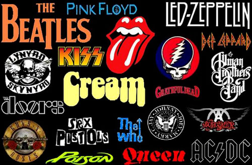

Sala Rock & Pop
Dove la musica è diventata energia, qui in questa stanza, avrete modo di coglierla. Gli stili universali di oggi, le fanno da contorno, lasciando libero sfogo alla creatività dei giorni nostri. Serviti da ragazzi e ragazze, vestiti in diversi stili.
All'inizio del XX secolo la musica cambiò profondamente, e fu scossa fin dalle fondamenta. Non solo, ma cambiarono anche, grazie alle invenzioni relativamente recenti della radio e del fonografo, i modi e i tempi di ascolto della musica stessa, prima limitati a concerti in locali appositamente adibiti, come teatri, locali, club o case private. Questo portò a crearsi un pubblico potenziale più vasto e meno acculturato, che apprezzava strutture melodiche e armoniche più semplici, dall'altra mai come in questo periodo storico fu facile, per chi volesse suonare, procurarsi uno strumento e imparare a usarlo. A questo si deve aggiungere una seconda rivoluzione, l'invenzione dell'altoparlante e dell'amplificazione audio, che permise di far suonare assieme strumenti che non potrebbero farlo altrimenti. In ambito pop nacquero personaggi che diventano autentici fenomeni mediatici raggiungendo una popolarità senza precedenti. Fra questi si possono citare Frank Sinatra, Elvis Presley, James Brown,Jimi Hendrix, i Beatles, Bruce Springsteen per arrivare ai recenti Michael Jackson, Bon Jovi, Oasis, Madonna, Cher, Britney Spears, Adele.

Altro genere popolare sorto nel XX secolo è stato il rock, dizione abbreviata di "rock and roll" o "rock'n'roll". Il rock'n'roll nacque negli anni cinquanta come musica da ballare, derivata dal boogie-woogie, ballo afro-americano del dopo guerra. Negli anni settanta, soprattutto in Inghilterra, si affacciarono personaggi come The Who, Pink Floyd, Led Zeppelin, Deep Purple, King Crimson, Emerson, Lake & Palmer, Yes, Genesis, Gentle Giant,Queen, e Soft Machine pronti a spaziare e a raggiungere nuove strutture musicalmente più complesse rispetto a quelle del rock primitivo per iniziare a dare vita a una rivoluzione. Alla fine degli anni settanta nacque un nuovo stile musicale che azzerò completamente il progressive, il punk, che vide il ritorno a sonorità hard e violente spinte a volte verso estremismi anti-musicali e legate a tematiche di contestazione politica. Negli anni ottanta le due correnti principali del rock erano il punk e le sue propaggini e il Metal. I primi anni novanta videro l'esplosione del fenomeno Grunge che riportò per qualche tempo il rock all'attenzione delle masse popolari. Nella seconda metà degli anni si avviarono sviluppi sempre più estremi e parossistici di queste correnti, rivolgendo l’attenzione a nicchie di pubblico sempre più ristrette, mentre le tematiche diventano sempre più oscure e decadenti. In linea generale, ad esclusione del pop-rock e del metal classico, lo sviluppo di questi generi ha finito per caratterizzare il rock degli ultimi decenni come genere "di nicchia", lontano tanto dalla tradizione colta quanto dalle regole della musica leggera di ampio consumo.